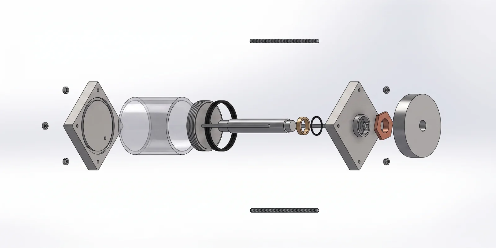
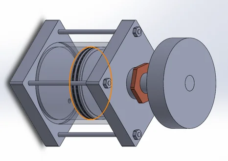
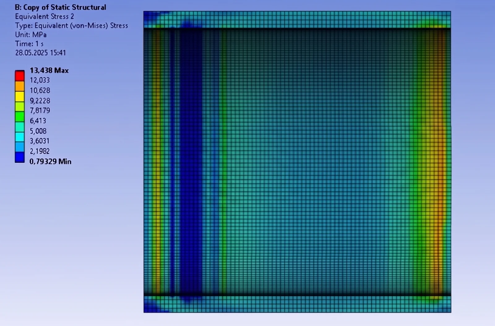
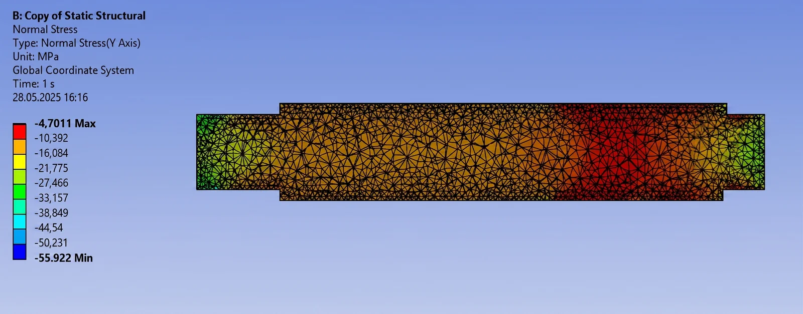
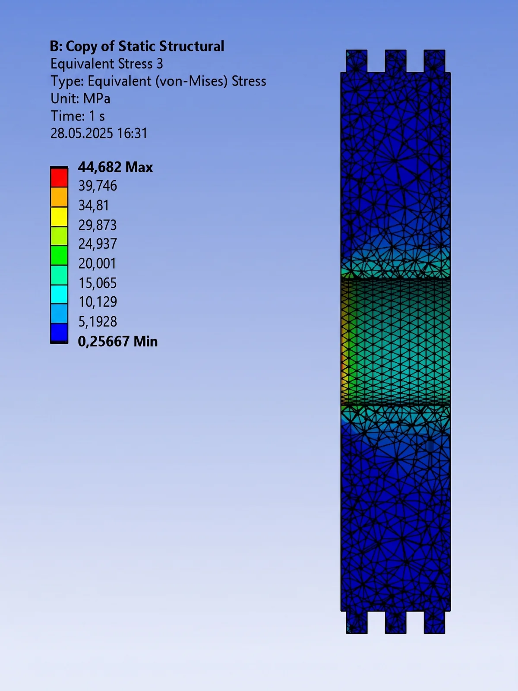
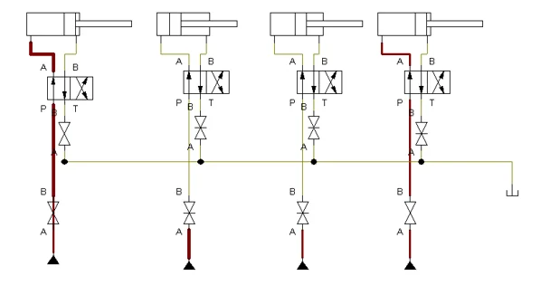
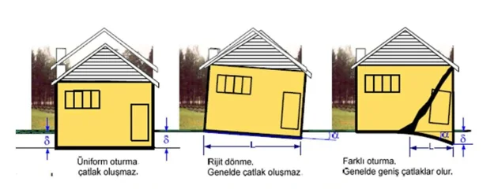

🔍 Click to enlarge




Conventional seismic isolators are designed solely to damp horizontal ground accelerations during an earthquake. However, post-earthquake soil liquefaction, groundwater depletion, or heterogeneous soil consolidation creates vertical elevation discrepancies (differential settlement) between building columns—inducing catastrophic shear stresses in the structural frame.
In this multidisciplinary study uniting Civil, Mechanical, and Computer Engineering, an adaptive seismic isolator system was developed to detect vertical column settlement in real time and actuate high-pressure hydraulic cylinders via closed-loop CAN Bus communication to re-level the building within millimeter precision.
Designed for critical infrastructure facilities (hospitals, data centers, schools), the system uses the lowest settling column as a reference plane and gradually actuates 2,060 kN capacity hydraulic cylinders beneath the remaining columns to bring the entire structure back to a uniform horizontal plane. The hydraulic circuit was verified in Festo FluidSIM and the Arduino & CAN Bus control hardware was physically prototyped and tested.
Foundation settlement occurs when soil beneath a structure displaces vertically due to liquefaction, consolidation, or water-table shifts. Heterogeneous (differential) settlement poses severe structural danger:

Figure 1: Uniform settlement, rigid rotation, and structural cracking caused by differential settlement (Click image to enlarge).
Through multidisciplinary collaboration, the problem was solved across three coordinated engineering thrusts:
Concurrent simulations, structural modeling, and hardware prototyping across the three engineering disciplines demonstrated the following results:
This project expands seismic isolation technology—traditionally confined to horizontal ground motion—by integrating active vertical hydraulic leveling and a distributed CAN Bus sensor network.